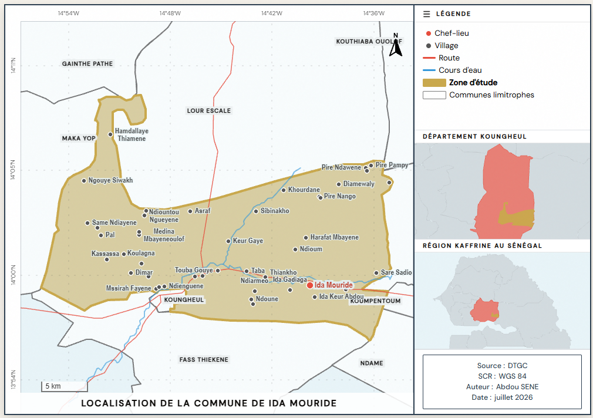
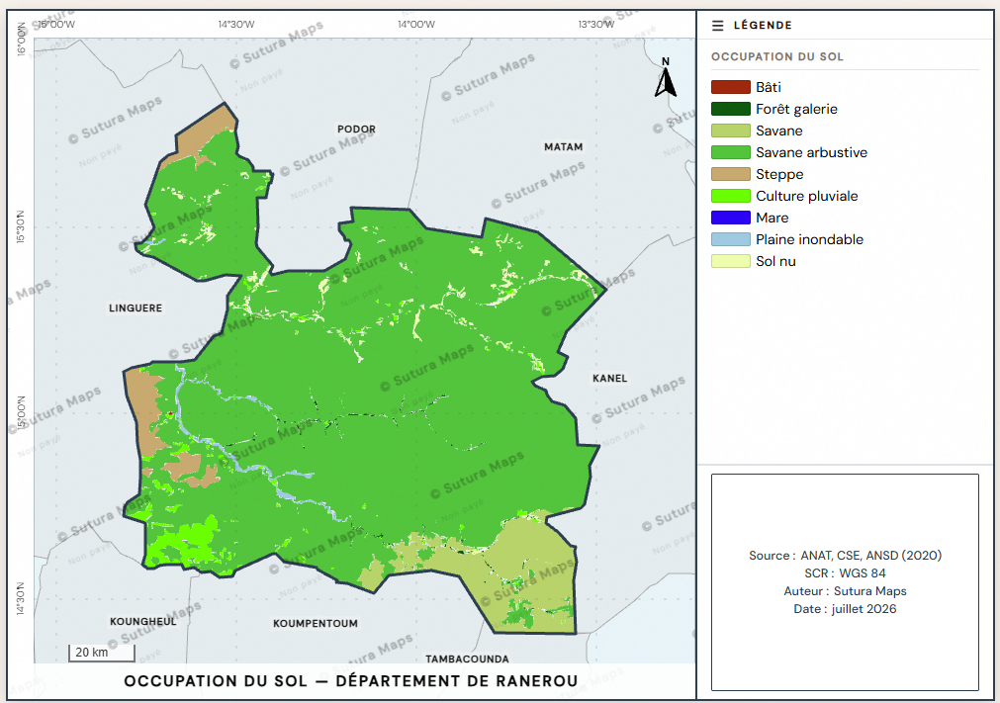
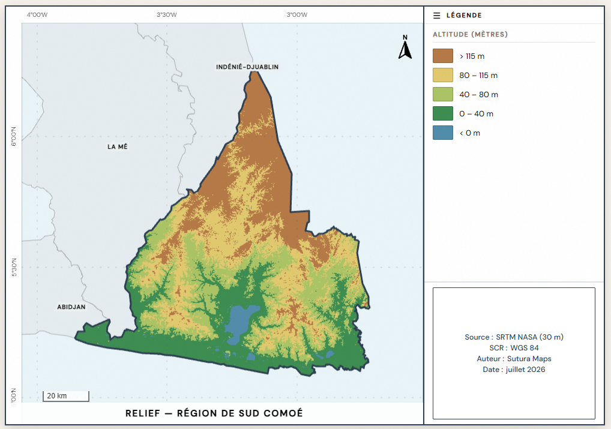
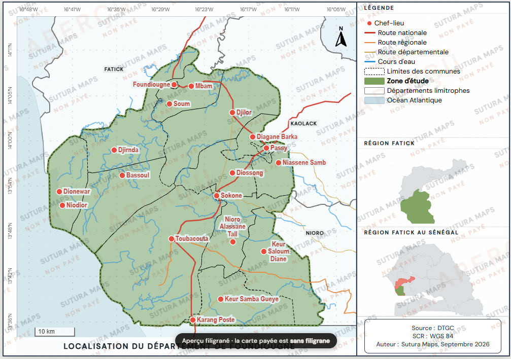
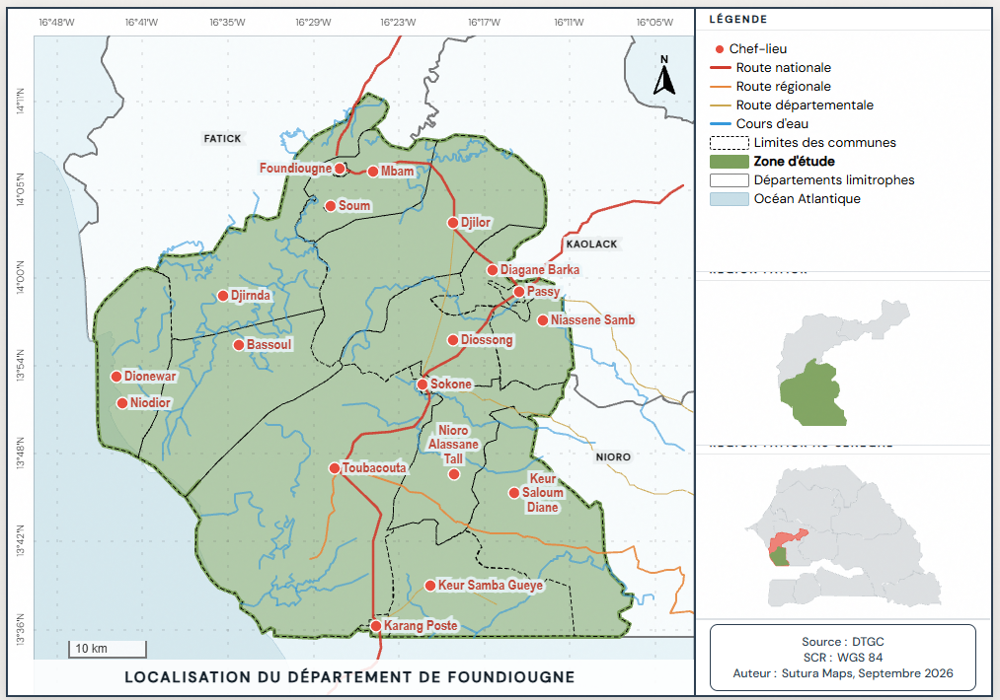
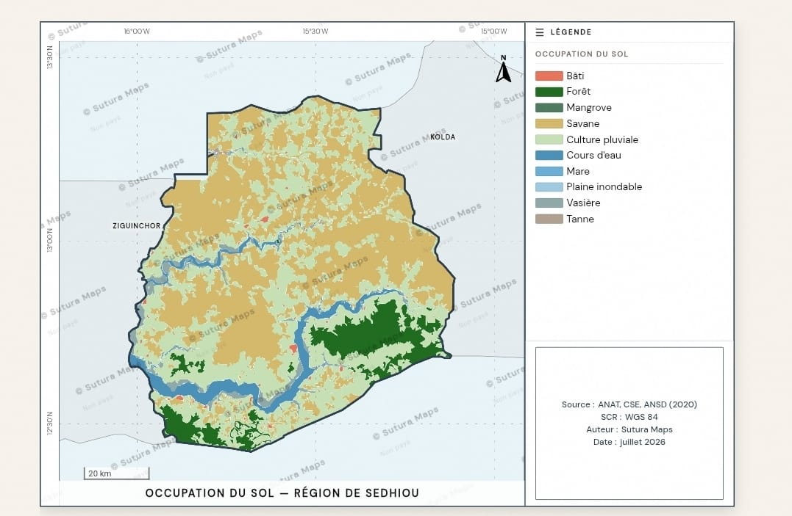
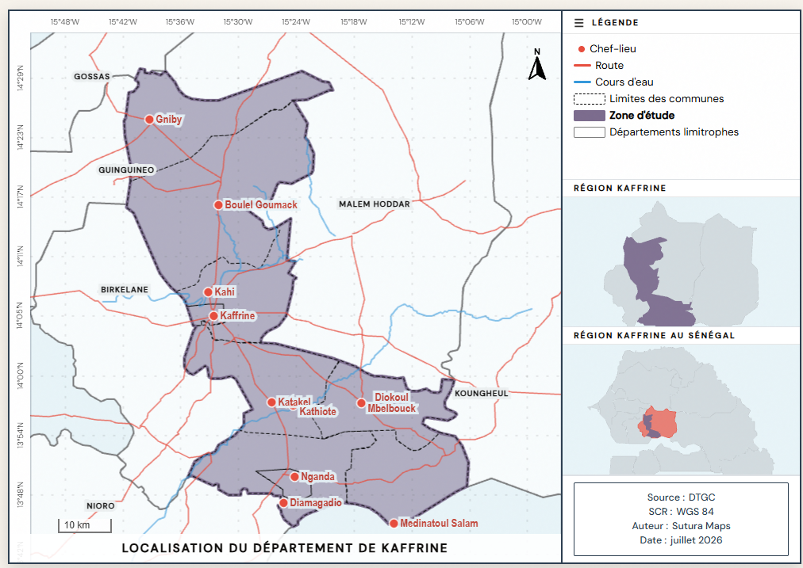
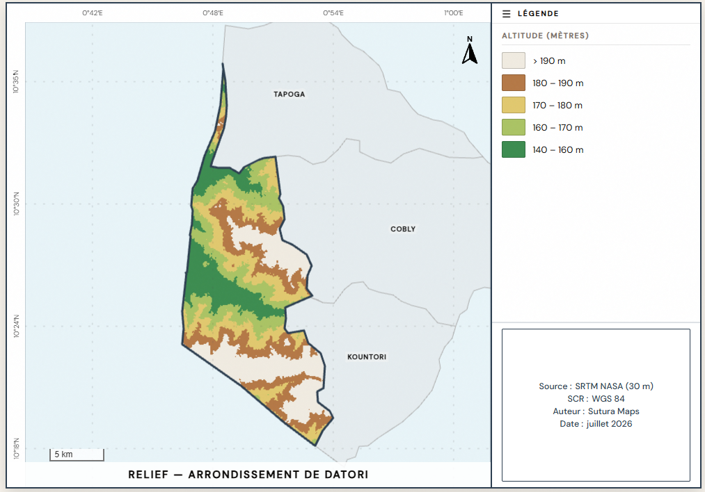

Localisation, occupation du sol ou relief de n'importe quelle commune, département ou région. Ce qui vous prenait une journée sur QGIS, sans rien installer, à partir de données officielles.



Générée en
47 s
557
communes
45
départements
14
régions
3
types de carte
2 000 F
par carte, sans abonnement
Comment ça marche
Pays, région, département, commune. Puis le type de carte : localisation, occupation du sol ou relief. Elle se génère sous vos yeux.
Couleurs, nom de l'auteur, étiquettes. Vous voyez la carte en entier, gratuitement, avant de dépenser quoi que ce soit.
2 000 FCFA en mobile money, et le PNG haute définition sans filigrane est à vous. Prêt pour votre mémoire ou votre rapport.
Avant / après paiement
Glissez la poignée. À gauche, l'aperçu gratuit que vous voyez avant de payer. À droite, le fichier que vous recevez : propre, net, prêt à imprimer.


Aperçu PayéeDes cartes déjà générées



Ce que vous obtenez
Notre philosophie
La discrétion, la retenue, la dignité. Un mot sans équivalent direct, et quatre valeurs derrière chaque décision.
Discrétion
Un travail professionnel sans logiciel SIG complexe.
Dignité
Ne plus dépendre de quelqu'un pour faire sa carte.
Honneur
Une carte dont vous êtes fier, pas une capture floue.
Autonomie
Juste un navigateur et votre zone d'étude.
Localisation, occupation du sol et relief (MNT), sur une seule plateforme.
Localités, routes classées, cours d'eau, altitude, découpés à l'emprise de votre zone. Sources citées.
Au bureau ou sur le terrain, avec une connexion basique.
Rien n'est partagé ni exposé. Votre travail reste confidentiel.
Prêt pour l'impression et les rapports institutionnels.
Tarification
Un cartographe vous facturerait plusieurs milliers de francs et plusieurs jours d'attente. Ici, c'est 2 000 FCFA et une minute. Pas d'abonnement, pas de compte.
Gratuit
pour voir la carte
Payez après
si elle vous plaît
Remboursé
sous 24 h si besoin
Retours utilisateurs
« L'application va arranger beaucoup de gens. Parfois quand tu es pressé pour avoir une carte, et ceux qui ne peuvent pas en faire ou n'ont pas suivi la formation, surtout les nouveaux masters. Je vais la partager dans nos groupes. »
« C'est vraiment adorable. En naviguant on sent la pertinence. Moi personnellement ça m'intéresse vraiment. Merci beaucoup Grand Abdou pour ces réalisations. »
« Waaaw, c'est extraordinaire. Et facile à faire. Un vrai gain de temps. »
« Trop fort. C'est excellent. »
Questions fréquentes
Une autre question ? Une zone qui manque ? On vous répond directement.
Écrire sur WhatsAppPar mobile money : Wave, Orange Money ou MaxIt. Le paiement est sécurisé. Aucun compte à créer, aucune carte bancaire nécessaire.
Un fichier PNG haute définition, sans filigrane, prêt à insérer dans un mémoire, un rapport, une présentation, ou à imprimer. Selon le type choisi : localisation (avec la situation dans le département et la région), occupation du sol ou relief (MNT). Légende, échelle et sources incluses.
Vous générez et voyez votre carte gratuitement. Vous ne payez que si elle vous convient, au moment de télécharger la version HD. Aucun risque.
Si la carte téléchargée ne vous convient pas, écrivez-nous sur WhatsApp dans les 24 heures qui suivent votre achat. Vous êtes remboursé, par le même mobile money.
Sénégal : les 557 communes, 45 départements et 14 régions, en localisation, occupation du sol et relief. Afrique de l'Ouest : le relief (MNT) s'ouvre pays par pays, à commencer par le Bénin et la Côte d'Ivoire. Une zone manque ou semble incorrecte ? Écrivez-nous sur WhatsApp avec le nom de votre zone, on regarde avec vous.
Votre lien de téléchargement reste valable 7 jours. Si vous l'avez perdu, écrivez-nous sur WhatsApp : on vous le renvoie.
Voir votre carte est gratuit. Une journée de travail à gagner. Générez-la maintenant, décidez ensuite.